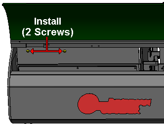
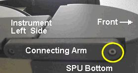

This procedure describes how to remove the sample presentation unit (SPU) from the instrument when moving the instrument through narrow areas (such as a doorway or passageway).
Refer to the
step: Move the instrument to the installation location. procedure to determine which parts or assemblies (if any) must be removed in order to move the instrument to the installation location. Once it is determined that the sample presentation unit (SPU) must be removed, follow the steps in this procedure to remove the SPU.
Prepare the instrument.
Open the main upper right cover.
Remove power from the motors by using the switch on the power distribution PCB labeled "All DC power (except CPU and reagent coolers)".
Prepare to remove the SPU.
Open the left upper cover and remove the bolt that holds the SPU to the Framus.
The bolt is located near the right end of the SPU load cover.
For DxI 600 instruments only:
Open the tinted cover on the SPU.
Remove the two screws in the SPU off-load area.
Remove the thumbscrew.
Remove the left rear cover from the SPU by pulling it to the left, away from the SPU.
Figure 375: Removing the screws inside the SPU

Figure 376: Removing the left rear SPU cover
Loosen, but do not remove, the locking screw on the SPU swing plate.
Pull up on the spring-loaded captive pin, and then grasp the SPU near the right end and swing it away from the instrument.
Remove the lower panel from the underside of the SPU (four screws).
Remove the electrical connections from the SPU interface PCB.
Remove the cover from the SPU interface PCB (two screws).
Disconnect the ethernet cable from the connector near the track screw on the swing plate.
Disconnect the ground strap near the track screw on the swing plate.
Remove the SPU.
Caution: Two people are required for this procedure because the SPU is awkward and heavy. Use caution when handling the SPU to prevent injury to service personnel and damage to the SPU.
For DxI 800 only: Locate the off-load connecting arm, remove the forward bolt, and then slide the off-load area rearward.
The connecting arm is located under the left front corner of the SPU.

Remove the pivot screw and the track screw.
Carefully lift the SPU and move it away from the instrument, making sure that all required disconnects are complete.
Place the SPU in a safe location.
Remove the swing plate (if necessary).
Remove the connector bracket for the ethernet cable near the track screw on the swing plate.
Remove the swing plate mounting screws (four screws).
Caution: Support the swing plate and the off-load assembly while installing the screws.
Lift the swing plate and off-load assembly away from the instrument, and place the assembly in a safe location.